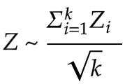

Statistical Models
We will be combining our analysis of the standard deviation model and the z-score model since they use very similar implementations -- only the ‘loss’ value calculations are different. This section provides a brief overview of why and how we used these models to map the variability of users’ keystrokes patterns.
Getting an approximate range for variability is important for the two models. We want to do this in the training step, which we will talk more about when we discuss implementations. This approximate range will be our keystroke patterns identifiers, assuming users have different patterns.
*The above repository contains code and data used to implement the two statistical models.
Standard Deviation and Z-Score

Figure 1: Stouffer's z-score
The standard deviation model is the most straightforward approach out of all three models. Standard deviations measure how ‘far’ values in the data set are from the mean. In our project, we used them to measure how far a user’s input is from their previously ‘saved’ keystroke pattern.
For the z-score model, out of different approaches using z-scores, we decided to follow Stouffer’s approach. First, a z-score is the number of standard deviations, some values in the data set are away from the mean. A standard z-score approach would use individual z-scores to analyze variability within a dataset. Stouffer’s approach is a bit different from standard z-score calculations since we define Z using a standard normal cumulative distribution function. In other words, Stouffer’s z-score is the averaged sum of all z-scores.
Bounds
Another important concept we should define before discussing the actual implementations is ‘bounds’. After we collected values that measure variability of user’s keystroke patterns, we needed a way to test whether these approximations of typing patterns are suitable in assessing new input keystrokes. When are our measurements most successful in accepting true users while rejecting false users? We used ‘bounds’ to define possible moments in which this could happen.
We used the name ‘bounds’ in both the standard deviation model and the z-score model. A ‘bound’ points to a number that marks the end of a range we will be looking at to see if our loss lies within that certain range. In a sense, it represents test values for variability.
In the stdev model, the bounds represent the ‘count’ of standard deviations. Using bounds, we attempted to figure out whether a sample data is within the range defined by 'mean +/- stdev*bound'. In the z-score model, the bounds represent the averaged sum of z-scores. With the z-score model, we checked whether the averaged total sum of z-scores is less than a certain number (bound).
We expected adding up z-scores to improve our statistical models. The ranges which we would test the user's input data in would become more flexible since individual variability measurements would even out. The z-score model, especially using Stouffer's calculations, is a more holistic approach to mapping variability.
Implementations
We first used the online data to get a rough ‘outline’ of the models. The online data step consists of a training step and a testing step. After testing, we got the optimal bound, which marks the moment in which the model is the most successful in accepting true users while rejecting false users.
Next, we used the survey data, which we have collected with our self-constructed survey. We proceeded with going through the same training and testing steps. There were slight changes to how we train and test our data, though the general idea of what’s going on in these steps remained the same.
Again, the approaches used for the two models are much similar, but there is a distinct difference in ‘what’ we calculated that ultimately makes the approximations we make using the z-score model better in representing keystroke patterns.
1. The first step of the two model finds the optimal bound using only the online data set. We trained the model on 10 random samples of a certain user, and tested it on the rest of the data. The training step involves taking the standard deviation and mean of the 10 random samples.
2. With the results we got from the training step, we performed different comparative calculations in the two models.
There’s not much ‘extra’ calculations we needed to do for the standard deviation model since the values we would be comparing to didn't need to be preprocessed for our final comparison step.
In the z-score model, however, with the standard deviation and mean, we were able to figure out the z-scores corresponding to each keystroke of a new input (dwell time and flight time of a key press/ key presses). By summing up all z-scores, we got our total input loss (a.k.a. the distance from the average of the 10 random samples to the new input).
Figure 2: ROC curves with optimal bounds marked
3. We then compared these losses against our 11 bounds (0 - 10) to construct ROC curves (Figure 2). If the loss is below a bound, we accepted (TA or FA). Otherwise, we rejected (TR or FR). The most important information we got from this first step is the optimal bound, which is when TAR (true acceptance rate) + FAR (false acceptance rate) = 1, EER. In our tests, the optimal bound was 6 for the standard deviation model and 8 for the z-score model.
4. After we figured out the optimal bounds, we moved on to stage two: we applied the same training and testing methods to the survey data.
Some minor details we still needed to change were the number of iterations we make in the testing step. First of all, we didn’t need to compare our losses to 11 bounds! Just one, our optimal bound, was okay. Additionally, we no longer were required to look through ALL keystroke data of a certain user. We conducted 2 testing rounds. In one, we used the first 10 inputs at training and in the other we used the second 10 inputs to train. In both, we used the last 10 inputs in testing.
Results
Figure 3: Results from two different training rounds
Recall that the numbers in Figure 3 are percentages, and that higher TAR and lower FAR are desired.
The bests results from the standard deviation model were from the second set of survey tests (2nd 10 tests, or tests 11-20).
The best results from the z-score model were also from the second set of survey tests.
Though the first testing round gave us a higher true acceptance rate, it also resulted in a higher false acceptance rate for the z-score model. This is probably because the test takers used the first set of tests to get familiarized with the never before seen password ‘.tie5Roanl’, thereby resulting in higher typing variability. The same reason applies to the results we observed from the standard deviation model.
We also noticed that our results match our speculation about the z-score model and how Stouffer’s approach would improve model results. Since we accepted users based on all z-scores, and this balanced out some of the approximated ranges for our identifier, we could say that the standard deviation model is a bit stricter in terms of accepting ‘true’ users compared to the z-score model. As a result, the z-score model shows a better TAR but sometimes shows a larger FAR, a maximum of 0.9 even.